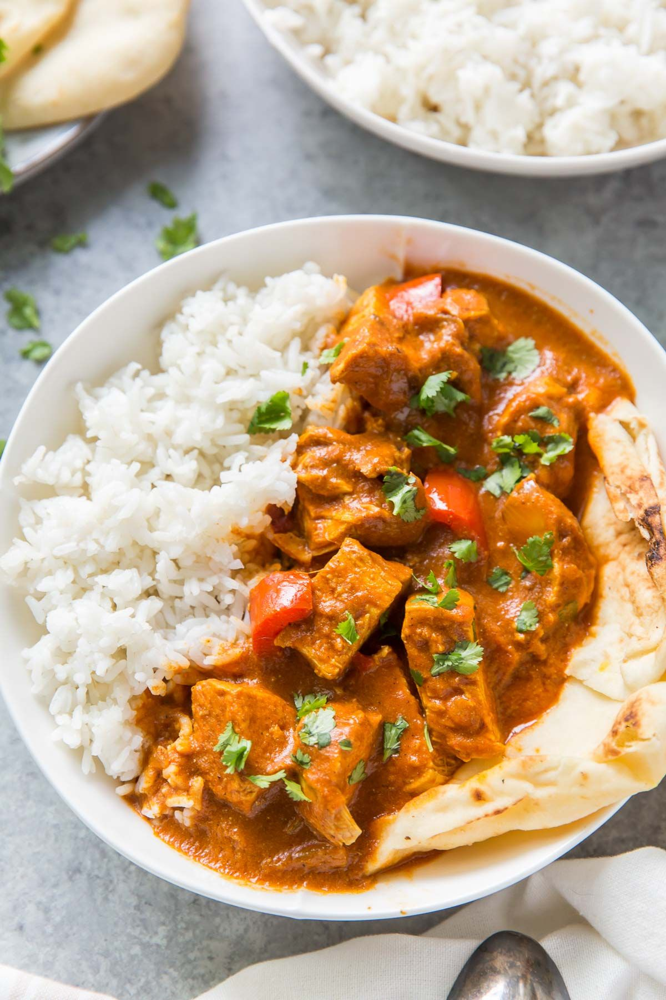

Instant Pot Butter Chicken

- Meal
- Dinner
- Serves
- 6
- Protein
- chicken
- Cook
- instant pot · 15 min active / 50 min total · easy
- Make-ahead / leftovers
- yes / yes
- Mediterranean
- yes
- WW tier
- moderate
- Status
- Trying out (probation)
Kristine's pressure-cooker butter chicken: whole breasts cook right in a spiced tomato sauce, then get cubed and stirred back in with coconut milk. Mild, saucy, kid-tolerable Indian night that isn't Curry Chicken (Thai red curry paste + coconut) or Slow Cooker Chana Saag.
Ingredients
- 3 Tbsp unsalted butter
- 1 small onion, chopped
- 5 cloves garlic, minced
- 1 Tbsp minced fresh ginger (or 1 tsp ground)
- 1 red bell pepper, chopped
- 1 Tbsp garam masala
- 2 tsp smoked paprika
- 1 tsp ground cumin
- 1 tsp turmeric
- 3/4 tsp salt
- 1/4 cup water
- 28 oz tomato sauce (one big can, or two 15 oz)
- 2 lb boneless skinless chicken breasts or thighs
- 1 cup full-fat coconut milk (or heavy cream)
- To serve: brown rice (house rule: always brown), naan, chopped cilantro
Method
- Instant Pot on Sauté. Melt the butter, add the onion, and cook 2–3 minutes until softened.
- Add garlic, ginger, and bell pepper; stir 30 seconds. Cancel Sauté.
- Stir in garam masala, smoked paprika, cumin, turmeric, and salt. Pour in the 1/4 cup water and scrape up anything stuck to the bottom (prevents the BURN warning).
- Add the tomato sauce, then lay the chicken on top. Don't stir.
- Seal. Pressure Cook / Manual on high for 10 minutes (~15 minutes to come up to pressure). Natural release 10 minutes, then vent the rest.
- Move the chicken to a board and rest a few minutes. Stir the coconut milk into the sauce.
- Cut the chicken into bite-size pieces and return it to the pot. Serve over brown rice with naan and cilantro.
Notes
- Source serves 6 as written — no scaling needed. With all six home plus big eaters, use 2.5 lb chicken; the sauce covers it.
- Brown rice can cook pot-in-pot on a trivet only if you have a tall-enough insert; otherwise run it in the rice cooker.
- Kid heat: smoked paprika and garam masala only — no chili. Add cayenne at the table for the adults.
- Not a clone of Curry Chicken: that's Thai red curry paste + coconut milk + brown sugar; this is an Indian tomato-masala sauce.
- Mediterranean ✓ on 3 of 4 (poultry, vegetables/tomato, brown rice) — butter is the fat, so it's a soft yes. Swap the butter for olive oil to make it solid. moderate for the coconut milk + butter.
- Freezes well — sauce and chicken together, rice separate.